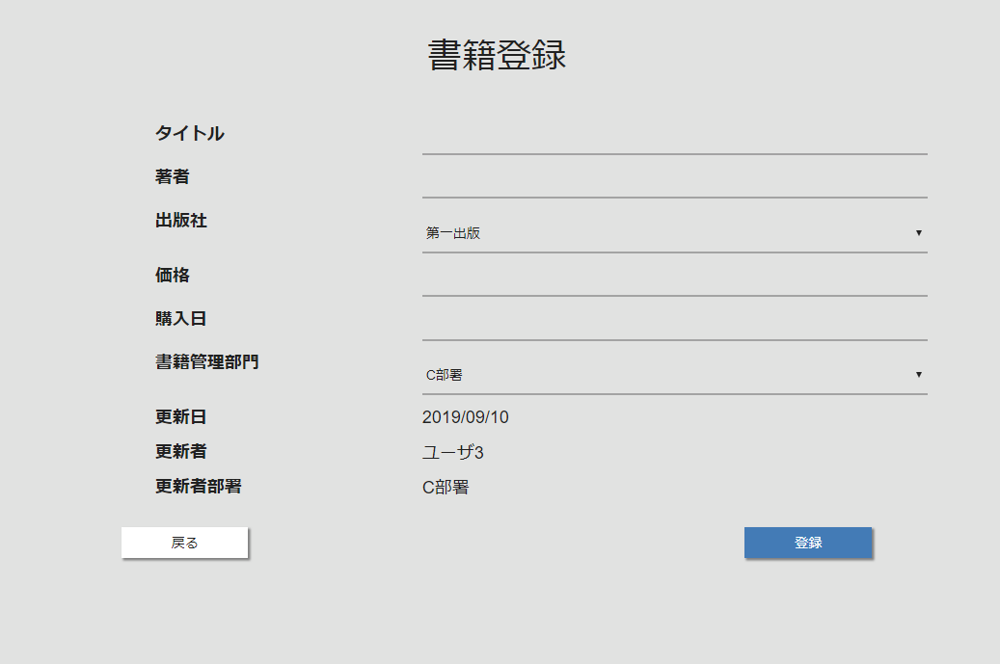

書籍登録画面
概要
書籍の新規登録を行う。
画面イメージ

画面項目
| 項目名 | タイプ | 取得元/保存先 | フォーマット |
|---|---|---|---|
| タイトル | テキスト | - | - |
| 著者 | テキスト | - | |
| 出版社 | テキスト | 出版社取得API | - |
| 価格 | テキスト | - | - |
| 購入日 | テキスト | - | - |
| 書籍管理部署 | ドロップダウン | 部署情報取得API | - |
| 更新日 | ラベル | 当日日付 | - |
| 更新者 | ラベル | ログイン情報.ユーザ名 | - |
| 更新者部署 | ラベル | ログイン情報.ユーザ部署名 | - |
| 戻る | ボタン | - | - |
| 登録 | ボタン | - | - |
アクション
初期表示時
- 出版社取得APIをコールし、取得した出版社の情報を出版社ドロップダウンに表示する。
- 部署情報取得APIをコールし、取得した部署の情報を書籍管理部署APIに表示する。
- セッションからログインユーザ情報を取得し、画面の各項目に表示する。
戻るボタン押下時
- 書籍一覧画面に遷移する。
登録ボタン押下時
- 入力チェックを実施する
- 【入力エラーがある場合】
- エラーの内容を画面に表示し、以降のアクション内処理を中断する。
- 確認ダイアログを表示する。「登録します。よろしいですか？」
- 【「はい」以外が選択された場合】
- 以降のアクション内処理を中断する。
- 画面の入力項目から書籍登録APIを呼び出し、登録処理を行う。
- 【APIのエラーが返却された場合】
- メッセージ「サーバにてエラーが発生しました。」を表示し、以降のアクション内処理を中断する。
- メッセージ「登録に成功しました。」を表示する。
- 書籍詳細画面に遷移する。
入力チェック
| 項目名 | 必須 | 最小桁数 | 最大桁数 | フォーマット | 備考 |
|---|---|---|---|---|---|
| タイトル | 〇 | 1 | 20 | - | |
| 著者 | 〇 | 1 | 20 | - | |
| 出版社 | 〇 | - | - | - | |
| 価格 | 〇 | 2 | - | 数値のみ | |
| 購入日 | 〇 | - | - | yyyy/MM/dd | |
| 書籍管理部門 | 〇 | - | - | - |